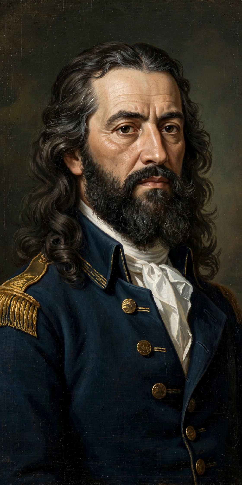

| Tiradentes | |
 | |
| Born | Joaquim José da Silva Xavier, 12 November 1746, near São João del-Rei, Minas Gerais, Brazil |
|---|---|
| Died | 21 April 1792 (aged 45), Rio de Janeiro |
| Occupation | Dentist, miner, military officer, activist |
| Known for | Leadership of the Inconfidência Mineira |
Joaquim José da Silva Xavier (12 November 1746 – 21 April 1792), known as Tiradentes ("Tooth Puller"), was a leading member of the Brazilian revolutionary movement known as the Inconfidência Mineira, which sought independence from Portuguese colonial rule. He is regarded as a national hero of Brazil, and the anniversary of his death, 21 April, is a national holiday.
Born on a farm in the captaincy of Minas Gerais, Tiradentes was orphaned young and raised by a godfather who was a surgeon. He worked in various trades — including dentistry, from which his nickname derives — and served as an ensign (alferes) in the colonial dragoons.
Inspired by the American Revolution and Enlightenment ideas, Tiradentes joined a conspiracy of miners, clergy, intellectuals and military men in Vila Rica (now Ouro Preto) that planned an uprising against Portuguese taxation, particularly the hated derrama, a forced tax levy. The plot was betrayed before it could begin, and the conspirators were arrested in 1789.
After a lengthy trial, most of the accused received exile, but Tiradentes — who took full responsibility — was sentenced to death. He was hanged in Rio de Janeiro on 21 April 1792, and his body was quartered, with the parts displayed in Minas Gerais as a warning.
With the proclamation of the Republic in 1889, Tiradentes was rehabilitated as a martyr of independence. His image appears on Brazilian currency, the city of Tiradentes in Minas Gerais bears his name, and 21 April is celebrated nationwide.